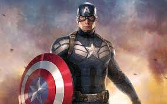

Batman
El vengador de la noche

Inicialmente, Batman apareció como un solitario combatiente del crimen. Su origen empezó a ser explorado a partir de Detective Comics número 33. Bruce Wayne es hijo del Dr. Thomas Wayne y su esposa Martha, dos empresarios exitosos y reconocidos en la sociedad de Gotham City. Su infancia transcurre en medio de privilegios y riquezas, predominantes durante su estancia en la mansión familiar. A los ocho años, cuando salían de una función de cine, sus padres son víctimas de un asalto en el que pierden la vida, asesinados por el delincuente Joe Chill; Bruce abrumado por un fuerte sentimiento de culpa, promete que hará todo lo posible por hacer de su ciudad un lugar más seguro, combatiendo el delito en cualquiera de sus formas. Con el afán de cumplir su sentencia, se somete a un riguroso entrenamiento físico y mental —aunque luego se percata de la necesidad de una identidad secreta, ya que según Wayne: «Los criminales son supersticiosos y cobardes, por lo que mis habilidades tienen que aprovechar sus temores para intimidarlos. Debo ser una criatura nocturna, oscura e impactante [...]»—. En ese mismo relato, la intromisión repentina de un murciélago que entra a través de la ventana de su cubículo influye en su idea de convertirse en el nuevo héroe: Batman.
Debido a su repentina aparición como el «vengador de la noche», la policía de Gotham City piensa que se trata de un nuevo delincuente, por lo que comienza a perseguirlo en sus primeras aventuras. Además, Batman comienza su primera relación romántica con Julie Madison, conociendo también a Robin (un acróbata de circo huérfano cuya identidad secreta es Dick Grayson) y afiliándose a la Liga de la Justicia. En los siguientes ejemplares Batman tiene que demostrar su apego a las leyes y apoyo a la justicia, para convencer al departamento de policía de su verdadero propósito: combatir la delincuencia. Poco después, la policía lo nombra miembro honorario del departamento. En este mismo período el mayordomo Alfred Pennyworth llega a la mansión de los Wayne y, tras descubrir las verdaderas identidades de sus amos, acepta su nuevo trabajo. Si bien, ciertamente se añade luego en el canon oficial que Alfred cuidó del joven Bruce al quedar este desamparado tras la muerte de sus padres, por lo que, en la cronología contemporánea, se considera que este personaje ha tenido un importante papel en la protección y cuidado de Bruce desde su infancia.
Iron Man
El hombre de hierro

Anthony Edward Stark es el hijo del jefe de Industrias Stark, Howard Stark y su esposa Maria Stark. Un niño genio que ingresa al MIT a la edad de 15 años para estudiar ingeniería mecánica y luego recibe maestrías en ingeniería eléctrica y física. Después de que sus padres mueren en un accidente automovilístico, hereda la compañía de su padre.
Mientras observaba los efectos de su tecnología experimental en el esfuerzo bélico estadounidense, Tony Stark es herido por una bomba y capturado por Wong-Chu, quien le ordena diseñar armas. Sin embargo, las lesiones de Stark son graves y la metralla se dirige a su corazón. Su compañero prisionero, Ho Yinsen, un físico ganador del Premio Nobel, cuyo trabajo se había ganado la admiración de Stark en el colegio, construye una placa pectoral magnética para evitar que la metralla alcance el corazón de Stark, manteniéndolo vivo. En secreto, Stark y Yinsen utilizan el taller para diseñar y construir una armadura de poder, la cual utiliza Stark para escapar. Sin embargo, durante el escape, Yinsen sacrifica su vida para salvar a Stark, distrayendo al enemigo para que Tony recargara. Stark se venga de sus secuestradores y escapa para reunirse con las fuerzas estadounidenses, conociendo en su camino a un piloto herido de la marina estadounidense, James "Rhodey" Rhodes.
Capitán América
Steven Rogers nació en el Lower East Side de Manhattan, en la ciudad de Nueva York, en 1920, hijo de inmigrantes irlandeses pobres, Sarah y Joseph Rogers. Joseph murió cuando Steve era un niño, y Sarah murió de neumonía mientras Steve era un adolescente. A principios de 1940, antes de la entrada de Estados Unidos en la Segunda Guerra Mundial, Rogers es un alto y escuálido estudiante de bellas artes que se especializa en la ilustración y un escritor y artista de cómics.
Perturbado por el ascenso de Adolf Hitler al poder, Rogers intenta alistarse, pero es rechazado debido a su frágil cuerpo. Su resolución atrae la atención del general del ejército de Estados Unidos, Chester Phillips y "Proyecto: Renacimiento". Rogers se usa como sujeto de prueba para el proyecto del Supersoldado, recibiendo un suero especial fabricado por el "Dr. Josef Reinstein", que luego cambió retroactivamente a un nombre en clave para el científico Abraham Erskine.
Superman
El último hijo de Kripton

Superman nació en el planeta Krypton y recibió el nombre de Kal-El al nacer. Cuando era bebé, sus padres, el científico Jor-El, y su esposa Lara Lor-Van, lo enviaron a la Tierra en una pequeña nave espacial momentos antes de que Krypton fuera destruido en un cataclismo natural.
Su nave aterrizó en el campo estadounidense, cerca de la ciudad ficticia de Smallville. Fue encontrado y adoptado por los agricultores Jonathan y Martha Kent, quienes lo llamaron Clark Kent. Clark desarrolló varias habilidades sobrehumanas, como una fuerza increíble y una piel impermeable. Sus padres adoptivos le aconsejaron que usara sus habilidades en beneficio de la humanidad y decidió luchar contra el crimen como un justiciero. Para proteger su privacidad, se pone un traje colorido y usa el alias "Superman" cuando lucha contra el crimen. Aunque denominado, algunas veces, de manera poco halagadora, como «el gran Boy Scout azul» por otros superhéroes, Superman también es conocido como «El Hombre de Acero», «El Hombre del Mañana» y «El Último Hijo de Krypton» por el público general de los cómics. Bajo la identidad de Clark Kent, Superman vive en medio de los humanos como un «tímido reportero» del diario Daily Planet de Metrópolis. Ahí trabaja junto a la reportera Lois Lane, con la cual ha sido vinculado románticamente. Junto con el fotógrafo Jimmy Olsen y el editor en jefe Perry White. Superman tiene una extensa galería de villanos con su archienemigo el supervillano Lex Luthor.
Mujer Maravilla
Diosa de la Guerra

La Mujer Maravilla es la Princesa Diana de las amazonas. Tomó su nombre de la diosa de la caza.
Fue formada en un principio por su madre en una figura de arcilla. Se le concedió vida por la súplica de su madre (Hipólita) a la diosa Afrodita. Concebida de este modo por gracia de una diosa, Diana creció siendo la más bella amazona de la Isla Paraíso, con la sabiduría de Atenea, tan fuerte como Hércules y más ágil y veloz que Hermes. Contrariando los deseos de su madre, con un disfraz logró escabullirse y ganar la competición para elegir la amazona más poderosa, la que debía partir de la Isla para auxiliar a los mortales en su lucha contra el nazismo.
Thor
Dios del trueno, hijo de Odín
El padre de Thor, Odín, decide que su hijo necesita que le enseñe la humildad y, en consecuencia, coloca a Thor (sin recuerdos de la divinidad) en el cuerpo y los recuerdos de un estudiante de medicina humana existente, parcialmente discapacitado, Donald Blake. Después de convertirse en médico y de vacaciones en Noruega, Blake presencia la llegada de una partida de exploración alienígena. Blake huye de los extraterrestres a una cueva. Después de descubrir el martillo de Thor, Mjolnir (disfrazado como un bastón) y golpearlo contra una roca, se transforma en el dios del trueno. Más tarde, en Thor# 159, se revela que Blake siempre ha sido Thor, el hechizo de Odin lo ha llevado a olvidar su historia como El Dios del Trueno y creerse mortal.
Derrotando a los alienígenas, Thor comparte una doble vida con su alter ego: tratar a los enfermos en una práctica privada con la enfermera - y el amor eventual - Jane Foster, y defender a la humanidad del mal. La presencia de Thor en la Tierra atrae casi inmediatamente la atención de su hermano adoptivo y enemigo, Loki. Loki es responsable del surgimiento de tres de los principales enemigos de Thor: el Hombre Absorbente; El Destructor, y el Demoledor. En una ocasión, las tácticas de Loki fueron accidentalmente beneficiosas, aunque tuvieron éxito en usar una ilusión de Hulk para llevar a Thor a la batalla, resulta en la formación del equipo de superhéroe, Los Vengadores, del cual Thor es miembro fundador y de larga data.
Linterna Verde
La historia de Alan Scott como Linterna Verde tendría como su comienzo miles de años atrás cuando un meteorito rodeado de una místeriosa "llama verde" cayó en la antigua China. Una voz surgiría de la llama profetizando que actuaría tres veces: una para traer muerte (un fabricante de lámparas llamado Luke Fairclough elaboraría un candil (lámpara de aceite) a partir del metal verde del meteorito; como castigo por lo que pensaban sería un sacrilegio, la población local lo asesinaría, sólo para ser destruida por un repentino estallido de la llama verde), otra para traer vida (en los tiempos modernos, la lámpara caería en manos de un paciente ingresado en una institución mental que la modificaría pasando a parecer una lámpara de queroseno; la llama verde le devolvió la cordura, dándole con ello una nueva vida), y la última para traer poder.
En 1940, la linterna llegaría a manos de Alan Scott, un joven ingeniero. Tras ser el único superviviente del colapso de un puente de ferrocarril y hallándose al borde de la muerte, la llama enseñaría a Scott cómo fabricar un anillo a partir de su metal, para darle increíbles poderes como el superhéroe Linterna Verde. Tras su primera aventura en la que se hizo pasar por un espíritu, adoptaría un llamativo y colorido traje con la intención de que a los criminales se les grabara su imagen en la memoria.
Hulk
El increíble Hulk
Durante la detonación experimental de una bomba gamma, el científico Robert Bruce Banner salva al adolescente Rick Jones, que ha conducido al campo de pruebas; Banner empuja a Jones a una trinchera para salvarlo, pero es golpeado por la explosión, absorbiendo enormes cantidades de radiación gamma. Despierta más tarde, aparentemente ileso, pero esa noche se transforma en una forma gris y pesada. Un soldado perseguidor llama a la criatura "Hulk". Originalmente, se creía que las transformaciones de Banner en Hulk se debían a la puesta del sol y se deshacían al amanecer, pero más tarde, después de que Rick vio a Banner convertirse en Hulk durante el día, luego de un intento fallido de los hombres de Ross de lanzar a Hulk al espacio, fue descubierto para ser causado por la ira. Banner fue curado en El Increíble Hulk # 4, pero optó por restaurar los poderes de Hulk con la inteligencia de Banner. La máquina de rayos gamma necesitaba afectar los efectos secundarios inducidos por la transformación que hicieron que Banner se enfermara temporalmente y volviera a su estado normal.
En The Avengers # 1 (septiembre de 1963), Hulk se convirtió en miembro fundador del equipo homónimo de superhéroes del título. Por The Avengers # 3, el uso excesivo de la máquina de rayos gamma convirtió a Hulk en un monstruo incontrolable y desenfrenado, sujeto a cambios espontáneos. En Tales to Astonish # 59 (septiembre de 1964), Hulk apareció como antagonista de Giant-Man. La serie estableció el estrés como el desencadenante para que Banner se convierta en Hulk y viceversa. Fue durante este tiempo que Hulk desarrolló una personalidad más salvaje e infantil, alejándose de su representación original como una figura brutal pero no del todo inteligente. Además, su memoria, tanto a largo como a corto plazo, ahora se vería notablemente deteriorada en su estado de Hulk. En Tales to Astonish # 64 (febrero de 1965) fue la última historia de Hulk que lo presentó hablando en oraciones completas. En Tales to Astonish # 77 (marzo de 1966), la doble identidad de Banner y Hulk se hizo pública cuando Rick Jones, convencido erróneamente de que Banner estaba muerto (cuando en realidad había sido catapultado hacia el futuro), le dijo al comandante Glenn Talbot, un rival de Banner para los afectos de Betty Ross, la verdad. En consecuencia, Glenn informó a sus superiores y eso convirtió a Banner en un fugitivo buscado al regresar al presente.
Flash
El cometa carmesí
Jay Garrick era un estudiante universitario en 1938 que accidentalmente inhaló vapores de agua pesada después de tomar un descanso para fumar dentro de su laboratorio donde había estado trabajando. Como resultado, descubrió que podía correr a una velocidad sobrehumana y que tenía reflejos igualmente rápidos. Después de una breve carrera como estrella de fútbol americano universitario, se puso una camisa roja con un rayo y un estilizado casco de metal con alas (basado en imágenes de la deidad griega Hermes o Mercurio el dios romano), posterior a eso comenzó a luchar contra el crimen como el Flash. Su primer caso involucró la lucha contra los "Faultless Four", un grupo de chantajistas. Garrick mantuvo su identidad en secreto durante años sin una máscara, al hacer vibrar continuamente su cuerpo mientras estaba en público para que cualquier fotografía de su rostro se volviera borrosa. Aunque originalmente de Tierra-2, se incorporó a la historia de la Nueva Tierra después de la Crisis on Infinite Earths y todavía está activo como el Flash operando desde Keystone City. Flash fue muy popular durante la Edad de Oro de los superhéroes. Fue uno de los fundadores de la Sociedad de la Justicia de América y un gran luchador contra el crimen en los años 40.
y se retiró provocando que la SJA se disolviera, pero en 1961 Jay salió de su retiro y conoció al Flash del mundo paralelo, es decir, a Barry Allen. Jay siguió luchando contra el crimen, y aunque cronológicamente debería representar 80 años, tiene solo 50 debido a algunos experimentos; de esta manera se ha mantenido vigente y ha continuado con la tarea abandonada por otros superhéroes. Luego de la muerte de Barry Allen y de la desaparición de Wally West en Crisis infinita, Jay se convirtió nuevamente en el hombre más rápido, al ser el único Flash vivo y el único ser dependiente de la Fuerza de la Velocidad. Cuando Bart regresó, absorbió involuntariamente la Fuerza de la Velocidad, convirtiéndose en el hombre más rápido. Jay se convirtió en una especie de guía para Bart y en un protector de la familia de Wally y de Iris West, la esposa de Barry. Jay logró entender que a partir de que Bart "corrompió" la fuerza de la velocidad (entró y salió) el último velocista que aparezca tendrá el poder de controlar esta fuerza. Luego de la muerte de Bart se produce un efecto de ingeniería inversa que trae a la vida a Barry Allen, a Wally West, a Max Mercury y a Johnny Quick. Jay se ha convertido en uno de los más grandes héroes por el hecho de seguir vigente a pesar de su avanzada edad y de convertirse en un miembro importante dentro de la Liga. Luego del regreso de Barry Allen y de Wally West, Jay junto con Barry se convierten en los Flash principales, mientras Wally se dedica a combatir el crimen en menor medida.
Viuda Negra

Natasha nació en Stalingrado (ahora Volgogrado), Rusia. La primera y más conocida Viuda Negra, es una agente rusa entrenada como espía, artista marcial y francotiradora, y equipada con un arsenal de armas de alta tecnología, que incluye un par de armas energéticas montadas en la muñeca y apodada "Piquete de la Viuda". No usa vestimenta durante sus primeras apariciones, sino simplemente ropa de noche y un velo. Romanova eventualmente se transforma en estadounidense por razones que incluyen su amor por el arquero convertido en superhéroe, Hawkeye.
Los primeros indicios de la infancia de Natasha Romanova provienen de Ivan Petrovich, quien se presenta como su chofer de mediana edad y confidente en Amazing Adventures de Black Widow de los años setenta. El hombre le cuenta a Matt Murdock cómo una mujer le había otorgado la custodia de la pequeña Natasha justo antes de su muerte durante la Batalla de Stalingrado en otoño de 1942. En consecuencia, se había sentido comprometido a criar a la huérfana como un padre sustituto y finalmente se había entrenada como Espía soviética, ansiosa por ayudar a su patria. En otro flashback, ambientado en la ficticia isla de Madripoor en 1941, Petrovich ayuda al Capitán América y al mutante, Logan, quien luego se convertiría en el súper agente canadiense y héroe disfrazado de Wolverine, para rescatar a Natasha de los nazis.